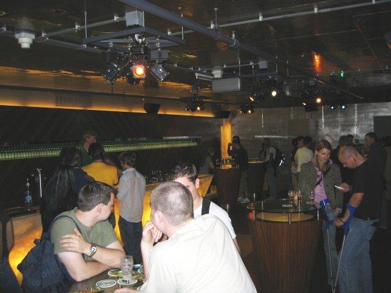
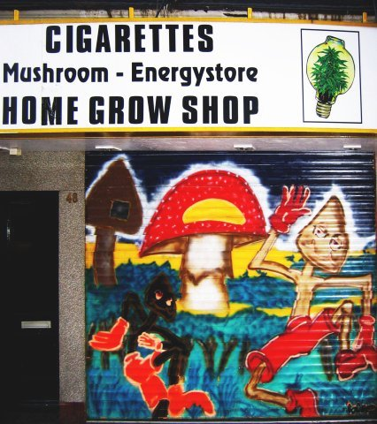

So here's an initial view of ornate buildings in Amsterdam. I believe straight ahead is part of the royal palace, and the red/beige striped building is a mall.
And here's a prominent church in the city.
The Rijks Museum, the friendly competitor of the Van Gogh Museum, had some impressive displays, including this ...umm... dollhouse.
This violin looked slick, hence the picture, and the Netherlands was laden with this familiar blue and white ceramic art. Usually in the form of collector's plates though.
This was another impressive display in the Rijks Museum. Just in case you can afford expensive furniture, inlaid mother of pearl looks like a good option.
Welcome to the first Rembrandt that caught my eye. I definitely like Van Gogh's festively abstract work more, but Rembrandt was very good at utilizing the sharp contrast between the shadowy and lit elements of the scenes he depicts.
Sorry for the fuzziness and glare of this picture. Most museums, including this one, did not allow flash. Just a tip.. the darker it is, the longer the exposure has to be, and the steadier your hands have to be. This is Rembrandt's famous "Nightwatch". It was quite large and impressive, and note that there's also the same light/dark contrast used masterfully here.
The Van Gogh museum allowed no photography at all, but here's a picture of a Van Gogh-style sign on its outside. I got a keychain from the souvenir shop with this same painting on it.
Welcome to Vondel Park. Very serene, and lots of people were walking around with their ecstatic yet well-behaved dogs.
Ijdwer was insistent that we hadn't truly visited Amsterdam until we visited the blue tea shop in Vondel Park. So we did and it was wonderful. After a bit of a wait (while everyone else had their food), I got some sort of sandwich and coffee.
Here's a good example of the well-behaved dogs in Vondel Park. A woman had this entourage of three dogs, and they were quietly waiting at the front door of the tea shop. The worst behavior award goes to the dog on the left, who every couple of minutes drifted into the tea shop looking for good eats until his owner shooed him back out the door. He did look hungry and the food was quite good, so I'd say he behaved much better than the average human adolescent.
And here's a good ol' fashioned game of chess being played outdoors. The game attracted decent bit of interest, making the game appear to be taken more seriously than a casual match. The knee-high chess pieces perhaps were a factor as well. At least you can't claim that you didn't see the bishop that takes your queen.
An anonymous artistic prankster snuck this little statue onto a tree-branch as a joke. People in Amsterdam thought the statue was cute, so they kept it there.
One of the many canals in Amsterdam.
This is known as "eating out of the wall". Quick place to get food, and apparently they have these in other cities as well, including New York.
When American products are sold overseas, often they'll look different, and sometimes they'll be sold by different companies. Because Nestle has such a developed international distribution network, General Mills has a partnership with them to allow Nestle to sell Cheerios internationally as a Nestle product.
This is probably the most impressive picture of a canal I've taken. The right side of the canal is lined with flower shops. Apparently there's some regulation that shops along this canal must sell flowers, perhaps in addition to minor trinkets.
This courtyard is easy to miss in the busy street of Amsterdam. However, if you know which alley to walk down, you can find this little hideaway where long ago Dutch princesses were able to frolick and relax in privacy.
The Royal Palace was among our busy list of stops. One of the prominent displays in the palace was the maps on the floor. Old world maps of the east and west hemispheres were laid out on the floor, along with a third circle containing a star chart.
Sculptures on the walls in the palace were plentiful and larger than life. Above one doorway you see Atlas dutifully suffering, and below that is a posse of supernatural heroes, including Death on the left.
A sculpture of a loyal dog stalwartly defending his fallen master.
Here's a disturbing sculpture of the god Mars eating a baby.
Paintings over the archways throughout the palace were grander and more colorful than shown here.

In front of the Royal Palace was Dam Square, where they had some meager amusement park rides. It was a fairly festive square, but not too impressive.

We went into a grocery store, and the cheese shop was far more impressive than Dam Square. The people in this picture were just like people in your average grocery store, so they were a bit confused and annoyed when I took this picture.

A Dutch dessert you may or may not like is called "vla", pronounced "flah". It's basically like pudding, except more liquidy. So much so that you can pour it right out of a milk carton.
The shopping carts in the grocery store were very easy to use. All four wheels going in every direction makes grocery shopping much less stressful.
We reached the home of Maarten and Ijdwer. Maarten apparently likes owls, so here they are, captured in all their glory.
And this is their shy pet bunny.
This is a picture of caverns somewhere in the Netherlands. We had no time to visit though, so I just took a picture of the picture.
Maarten is a gourmet-class chef, and he prepared a 5 part Indonesian-cuisine entree that was dreamy. Maarten has a very efficient kitchen, and he's very skilled with his chef's knife.
Now we're floating down a canal in Amsterdam.
We floated past this artsy-looking building which is apparently a technical school for children.
Also on the canal tour was this magnificent ship that looks ready to set sail for the New World.
This oriental-style business is very aware of the importance of a stunning impression to potential patrons floating along the river.

At night, in the open waters, nothing is really close enough for the flash to help. Therefore, the camera sets the exposure time very high. That's what screwed up these pictures, but I think they make stunning abstract art.
Before we hit the hay, I made sure we got a group photo with our commendable Amsterdam hosts.
Here's a view of one of the plazas within Amsterdam that Miller and I passed by on our own. Pictures of birds in flight are fun to look at, so I zoomed in on a couple.
Hidden in the top floor of one of the gift shops was this clog making setup. Wooden clogs are a popular souvenir sold in the Netherlands. Apparently the good ones are actually comfortable, and our next host from Eindhoven admitted to owning a pair when she was little.
Passing by the canals, I took this picture and was pleased to capture a scenic motorboat heading under the bridge we were on.
This is another flea market, more colorful than the last.
I probably should not have taken a picture of this bauble that was up for sale. I figured my friend Pete, who has t-shirts that look like this, would appreciate it.
Me in front of a cafe almost named after me. Dantzig is a name with the same origin as Danzig, so it was close enough for me to make a big deal of it. Apparently the cafe is named more directly after a choreographer with Dantzig for a last name. Service was mediocre but the food was amazing. I tried De Koninck beer for the first time too, which was my favorite Belgian beer during the vacation. I've since changed my mind, and now like Chimay Trappiste Perez the best.
Scenic view behind a double-seater bicycle.
Scenic view not behind a double-seater bicycle.
This is one of many house boats. Miller was infatuated with them and would buy one if he could afford the parking space. They get strapped along the side of a canal, and connect to hookups for various utilities, and have their own mailboxes too. This one had dainty plant-life at its rear.
We weren't going to leave Amsterdam without hitting the Heineken Brewery. Time for the grand tour what beery delights the Dutch can offer.
This was a cool little toy on display that lets you open up 6 bottles at once.
You might not be able to read the entry tickets, but it included three "Free Heineken" coupons.
This was the coolest thing in the brewery, unfortunately. A spherical CRT display that you rotate with the circular bar underneath. When you rotate to one of the stars, where a Heineken Brewery is located, it shows a little video of what that location is like.

Lines were very long and bad for claustrophobia.
While on line, there was a mildly amusing holographic scientist who moved around a room. As the hologram reached to light a candle or put it out, a little non-holographic fire would spring out or extinguish sychronously.

We finally got to the front of the line, after about 40 minutes of waiting, and then they told us the ride was broken, so we went to the bar to drown our sorrows in our free Heinekens. Even though we weren't in Belgium yet, we had already tried enough Belgium beer to this point to realize that Heineken is crap. The free beers they give you are also rather tiny.
After the museum, we wandered around. This display looked tasty, so I took a picture.
Miller was amused by this truck. At this point, I realized that whenever Miller thought something looked cool, I'd take a picture.
We quested for typical Dutch cuisine. Near the hotel was a restaurant named what sounded like "Owd Oolond", spelled "Oud Holland", and translated to "Old Holland", which finally made sense. This dish is mainly meats, potatoes, peas n' carrots, and beans (and I organized them nicely for you), but the most curious thing was the beer, Oud Bruin. I asked what the beer would be like. The waiter said outright that he didn't like it and we shouldn't get it. I asked another waiter later on what a typical Dutch beer was, and he said this beer was very Dutch. Well, I ordered it, and it was as interesting as it was disappointing. The beer tasted exactly like Coca Cola, and had a puny 2.5% alcohol, which seems even more puny with Belgium nearby. I would say that if you want a beer rather than a soda, this is just about the worst choice you can make, ever.
Look how messy and unorganized Miller's food is. I had nothing better to do and that 2.5% alcohol beer was getting to me.

There were plenty of druggies around Amsterdam, obviously, and the graffiti artists were eager to cater to them.
Around the drug-laden sections of Amsterdam, restaurants really didn't put much effort into advertising, because no one seemed to care much about anything.
Here's a shop that sells a nice selection of bongs. The picture was fuzzy, but it's still much clearer than the usual customer would be able to see.
This was a rather creatively engineered bridge. I can't remember from the picture how it worked exactly, but rest assured it really did open and close with minimal energy usage.
Back